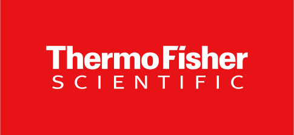
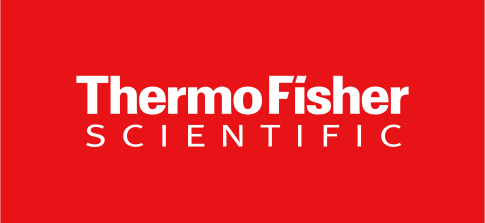
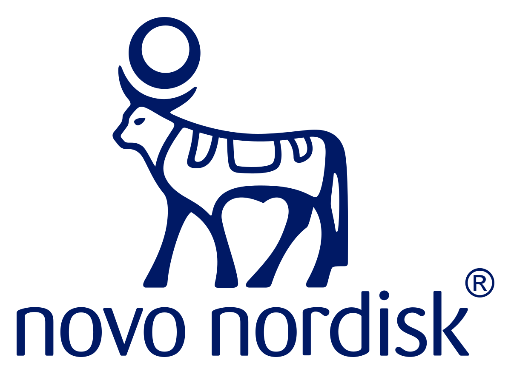
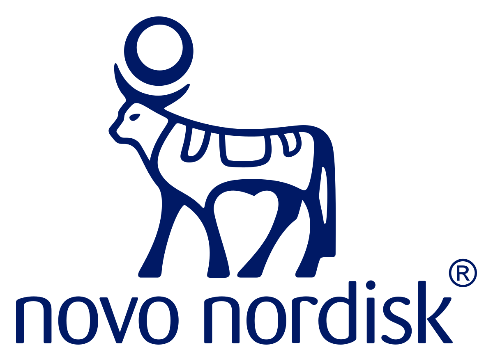

Black box instead green?
Samples are made accurately despite any difficult conditions such as high temperatures or corrosive solutions. And Small form factor also allows the entire system to be placed in a refrigerator or climate chamber.
Samples are collected in the standard H-P-L-C - G-C vials or ninety six well plates and can be analyzed directly by a chromatographic technique without a transfer of vial’s content or sample preparation.
Samples made simply in different conditions including high temperatures, toxic solutions, gas pipelines and bio analisys. Small Probe sizes allow the entire system to be placed in a refrigerator or pressure chamber, which was previously impossible. And universal vial and tray system are compatible with many devices without unnecessary interventions, for example, mass spectrometers.


 

 
